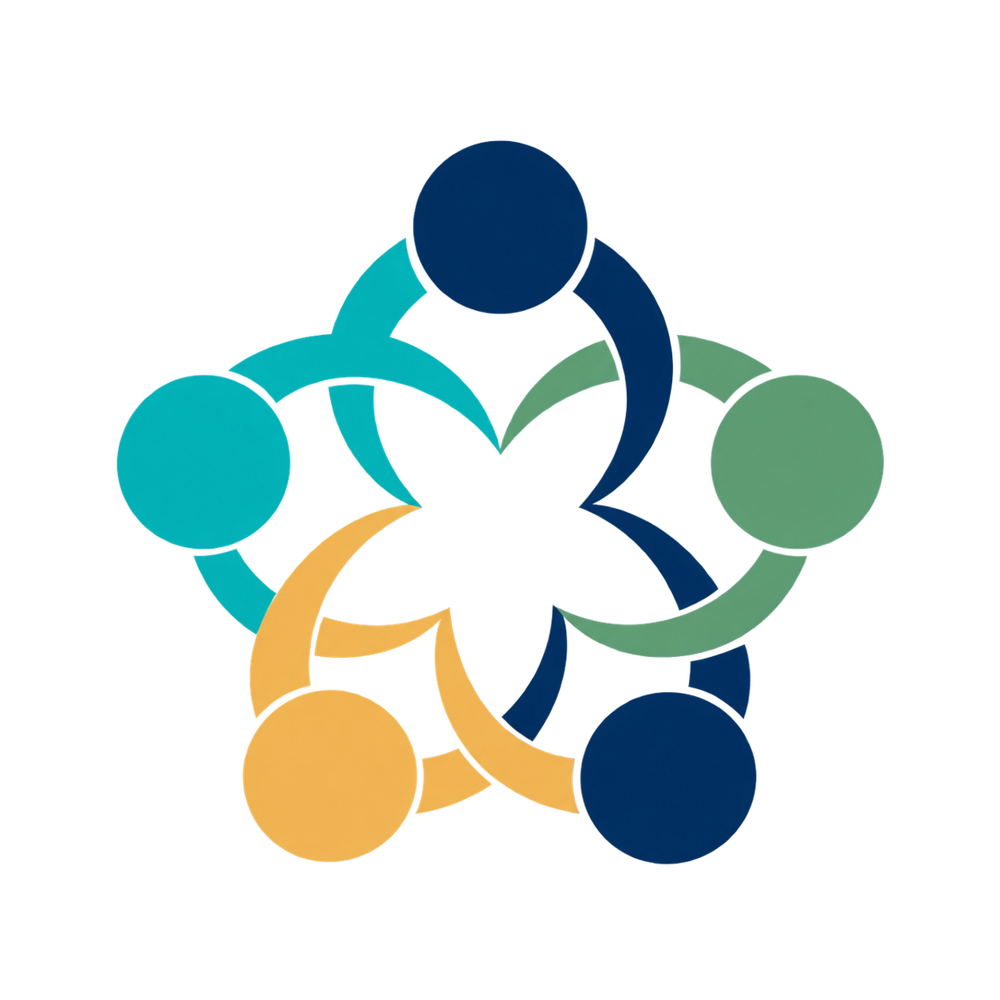

Founder
Roberta Calegari
University of Bologna
Trustworthy AI engineering, fairness, explainability and AI compliance.

TRUST-AI Joint Initiative for Trusted AITRUST-AI brings together individuals at different stages of their careers and from different sectors, while preserving the distinct role of our institutional Founding and Associated Partners.
Trustworthy AI engineering, fairness, explainability and AI compliance.
Responsible AI engineering practices and AI lifecycle implementation.
Responsible AI governance, ethics and policy.
Inclusive AI, digital inclusion and global societal perspectives.
AI regulation, policy, compliance and health-AI governance.
Fellows will be researchers and practitioners who contribute on a sustained basis to TRUST-AI activities.
Temporary visitors hosted by a Founding Partner who contribute to the initiative’s research, education or engagement activities.
A community for PhD students, postdoctoral researchers and junior scholars taking part in TRUST-AI activities.
Contributors to a particular project, event, debate or educational activity.